Aula 16 · Programação em Python
Matplotlib avançado: personalização e visualizações especiais
Do gráfico que funciona ao gráfico publicável: estilos, cores, anotações, painéis múltiplos e exportação em resolução de revista.
Hoje vamos elevar nossos gráficos ao próximo nível! Vamos aprender a criar visualizações que impressionam e comunicam com máxima eficiência. É hora de se tornar um artista dos dados!
1. Revisão rápida dos desafios
Vamos conferir os desafios da aula passada!
import numpy as np
import matplotlib.pyplot as plt
# Desafio 1: Funções matemáticas
x = np.linspace(0, 10, 100)
y1 = x**2
y2 = x**3
y3 = np.sqrt(x)
plt.figure(figsize=(10, 6))
plt.plot(x, y1, 'r-', linewidth=2, label='y = x²')
plt.plot(x, y2, 'b-', linewidth=2, label='y = x³')
plt.plot(x, y3, 'g-', linewidth=2, label='y = √x')
plt.title('Funções Matemáticas')
plt.xlabel('x')
plt.ylabel('y')
plt.legend()
plt.grid(True, alpha=0.3)
plt.xlim(0, 10)
plt.show()
# Desafio 2: Vendas mensais
meses = ['Jan', 'Fev', 'Mar', 'Abr', 'Mai', 'Jun',
'Jul', 'Ago', 'Set', 'Out', 'Nov', 'Dez']
vendas = [150, 180, 200, 170, 220, 250, 280, 260, 240, 210, 190, 300]
meta = 200 # Meta mensal
plt.figure(figsize=(12, 6))
barras = plt.bar(meses, vendas, color='skyblue', alpha=0.7)
plt.axhline(y=meta, color='red', linestyle='--', linewidth=2, label='Meta')
plt.title('Vendas Mensais vs Meta')
plt.ylabel('Vendas (mil R$)')
plt.legend()
plt.grid(axis='y', alpha=0.3)
plt.show()
# Desafio 3: Distribuição de idades
np.random.seed(42)
idades = np.random.randint(18, 80, 100)
media_idade = np.mean(idades)
plt.figure(figsize=(10, 6))
plt.hist(idades, bins=15, color='lightgreen', alpha=0.7, edgecolor='black')
plt.axvline(media_idade, color='red', linestyle='--', linewidth=2,
label=f'Média: {media_idade:.1f} anos')
plt.title('Distribuição de Idades')
plt.xlabel('Idade (anos)')
plt.ylabel('Frequência')
plt.legend()
plt.show()
print("Desafios resolvidos! Agora vamos ao nível avançado!")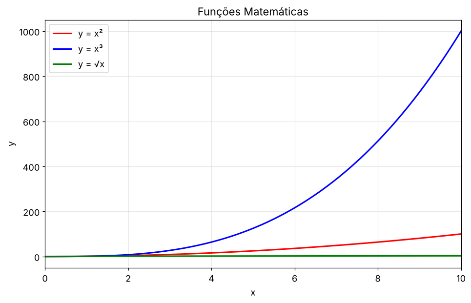
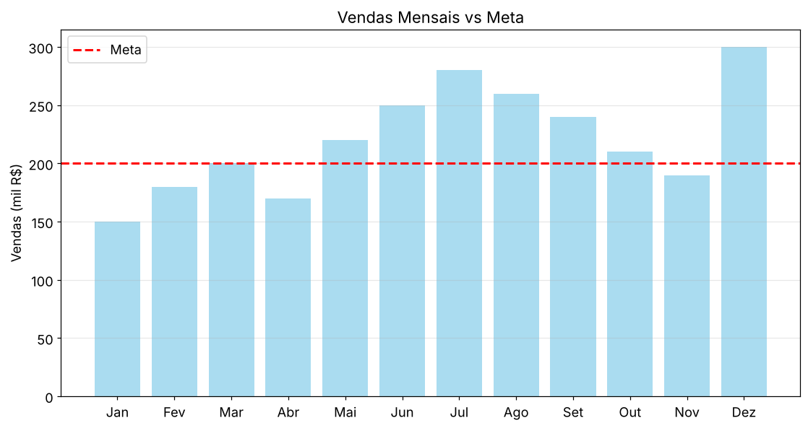
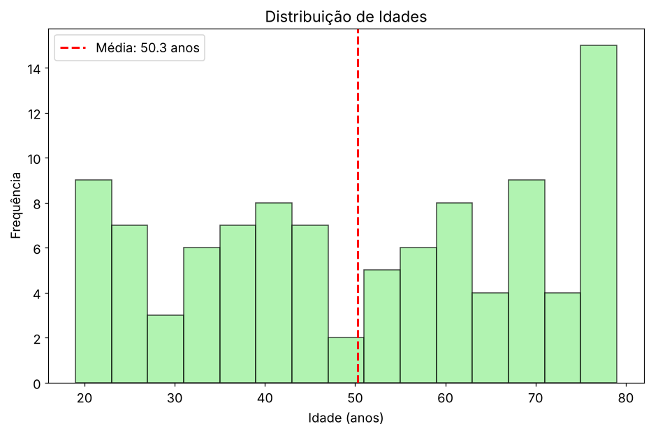
2. Estilos e temas profissionais
Vamos transformar gráficos simples em visualizações impressionantes!
# Verificando estilos disponíveis
print("Estilos disponíveis no Matplotlib:")
estilos_disponiveis = plt.style.available
for i, estilo in enumerate(estilos_disponiveis):
print(f"{i+1:2d}. {estilo}")
print(f": {len(estilos_disponiveis)} estilos!")# Dados para testar estilos
x = np.linspace(0, 10, 100)
y1 = np.sin(x) * np.exp(-x/10)
y2 = np.cos(x) * np.exp(-x/10)
# Estilos mais populares
estilos_populares = ['default', 'seaborn-v0_8-darkgrid', 'ggplot',
'bmh', 'dark_background', 'fivethirtyeight']
fig, axes = plt.subplots(2, 3, figsize=(18, 12))
axes = axes.flatten()
for i, estilo in enumerate(estilos_populares):
with plt.style.context(estilo):
axes[i].plot(x, y1, linewidth=2, label='sen(x)×e^(-x/10)')
axes[i].plot(x, y2, linewidth=2, label='cos(x)×e^(-x/10)')
axes[i].set_title(f'Estilo: {estilo}', fontsize=12)
axes[i].legend()
axes[i].grid(True, alpha=0.3)
plt.tight_layout()
plt.show()
print("Cada estilo tem sua personalidade! Escolha o que combina com você!")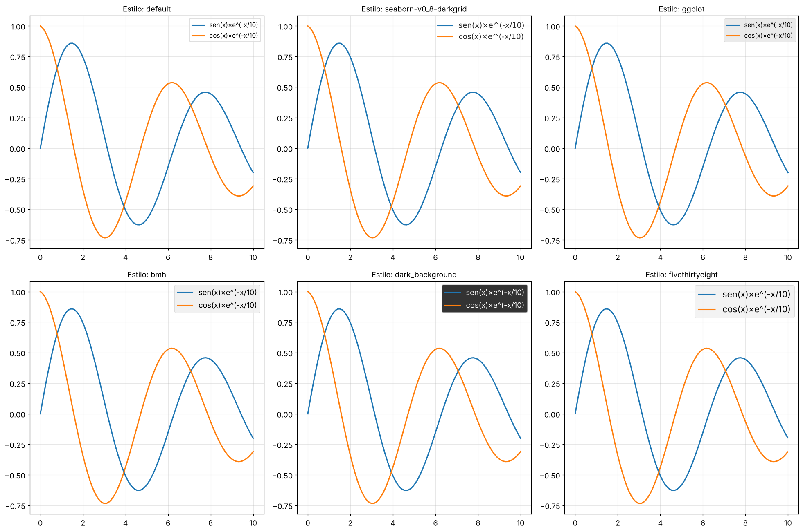
default (padrão limpo), seaborn-v0_8-darkgrid (grade escura profissional), ggplot (inspirado no R), bmh (estilo Bayesian Methods for Hackers), dark_background (fundo escuro para apresentações), e fivethirtyeight (estilo jornalístico de dados)." loading="lazy"># Configuração personalizada para gráficos científicos
def configurar_estilo_cientifico():
"""Configura um estilo personalizado para gráficos científicos"""
plt.rcParams.update({
'figure.figsize': (12, 8),
'font.size': 12,
'axes.titlesize': 16,
'axes.labelsize': 14,
'xtick.labelsize': 12,
'ytick.labelsize': 12,
'legend.fontsize': 12,
'lines.linewidth': 2.5,
'grid.alpha': 0.3,
'axes.grid': True,
'axes.spines.top': False,
'axes.spines.right': False,
'axes.edgecolor': 'gray',
'axes.linewidth': 1.2,
})
# Aplicando o estilo personalizado
configurar_estilo_cientifico()
# Testando o novo estilo
t = np.linspace(0, 8*np.pi, 200)
amplitude = np.exp(-t/8)
sinal1 = amplitude * np.sin(t)
sinal2 = amplitude * np.cos(t + np.pi/4)
plt.figure()
plt.plot(t, sinal1, color='#2E86AB', label='Sinal A')
plt.plot(t, sinal2, color='#A23B72', label='Sinal B')
plt.plot(t, amplitude, '--', color='gray', alpha=0.7, label='Envelope')
plt.plot(t, -amplitude, '--', color='gray', alpha=0.7)
plt.title('Sinais Oscilantes com Amortecimento')
plt.xlabel('Tempo (s)')
plt.ylabel('Amplitude')
plt.legend()
plt.show()
print("Estilo científico personalizado aplicado!")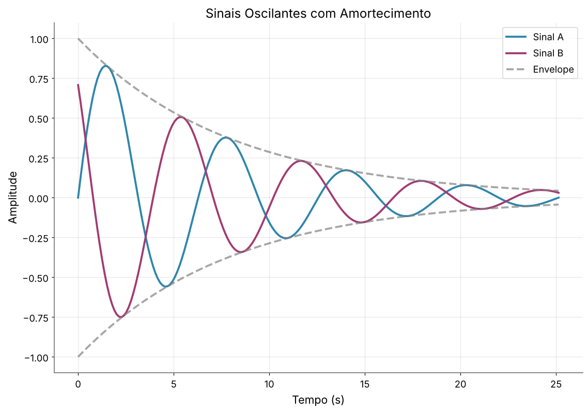
figure.figsize: tamanho padrão das Figurasfont.size: tamanho base da fonteaxes.spines.top/right: remove bordas superiores/direitasgrid.alpha: transparência da gradelines.linewidth: espessura padrão das linhas- Use
plt.style.context()para estilos temporários
3. Cores e paletas profissionais
A escolha das cores pode fazer ou quebrar um gráfico!
# Simulando dados de diferentes materiais
materiais = ['Alumínio', 'Cobre', 'Ferro', 'Ouro', 'Prata']
condutividades = [3.77, 5.96, 1.03, 4.10, 6.30] # 10^7 S/m
# Paletas de cores diferentes
cores_profissionais = ['#1f77b4', '#ff7f0e', '#dc143c', '#ffd700', '#9467bd']
cores_cientificas = ['#2E86AB', '#A23B72', '#dc143c', '#ffd700', '#592E83']
cores_naturais = ['#8FBC8F', '#4682B4', '#dc143c', '#ffd700', '#9932CC']
# Comparando paletas
fig, axes = plt.subplots(1, 3, figsize=(18, 6))
# Paleta padrão
axes[0].bar(materiais, condutividades, color=cores_profissionais)
axes[0].set_title('Paleta Profissional')
axes[0].set_ylabel('Condutividade (10⁷ S/m)')
axes[0].tick_params(axis='x', rotation=45)
# Paleta científica
axes[1].bar(materiais, condutividades, color=cores_cientificas)
axes[1].set_title('Paleta Científica')
axes[1].tick_params(axis='x', rotation=45)
# Paleta natural
axes[2].bar(materiais, condutividades, color=cores_naturais)
axes[2].set_title('Paleta Natural')
axes[2].tick_params(axis='x', rotation=45)
plt.tight_layout()
plt.show()
print("A escolha da paleta muda completamente a percepção!")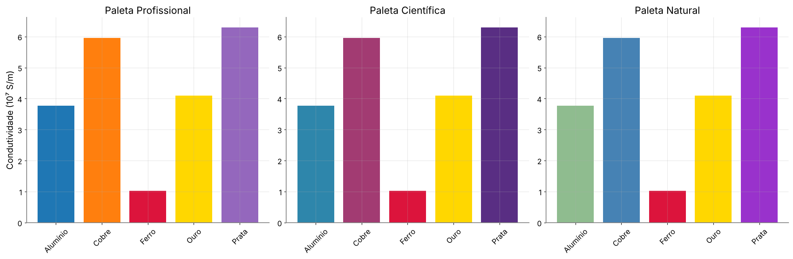
# Paletas amigas dos daltônicos
cores_daltonismo = ['#1f77b4', '#ff7f0e', '#2ca02c', '#d62728', '#9467bd',
'#8c564b', '#e377c2', '#7f7f7f', '#bcbd22', '#17becf']
# Testando com dados categóricos
categorias = ['Cat A', 'Cat B', 'Cat C', 'Cat D', 'Cat E']
valores = [23, 34, 45, 56, 67]
plt.figure(figsize=(10, 6))
barras = plt.bar(categorias, valores, color=cores_daltonismo[:len(categorias)])
# Adicionando padrões para máxima acessibilidade
padroes = ['///', '...', '+++', 'xxx', '|||']
for i, (barra, padrao) in enumerate(zip(barras, padroes)):
barra.set_hatch(padrao)
barra.set_alpha(0.8)
plt.title('Gráfico Acessível - Cores + Padrões')
plt.ylabel('Valores')
plt.show()
print("Gráfico acessível para todos!")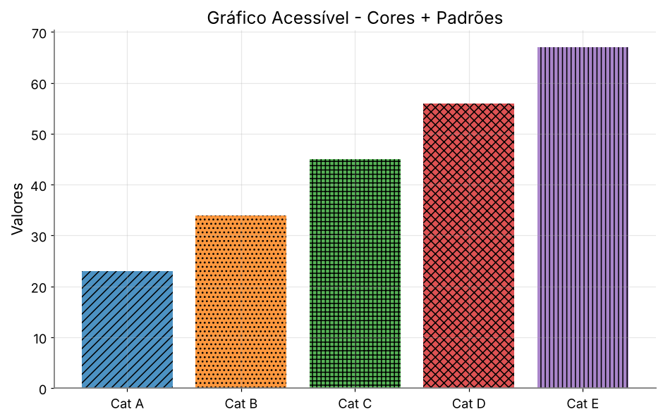
- Use paletas testadas para daltonismo (Viridis, Plasma, Cividis)
- Combine cores com padrões de hachura
- Evite apenas vermelho/verde para distinções importantes
- Teste sempre em escala de cinza
- Use contraste suficiente para texto
4. Visualizações especiais
Vamos além dos gráficos básicos!
# Padrão de radiação de uma antena
angulos = np.linspace(0, 2*np.pi, 360)
# Padrão direcional (mais forte na frente, mais fraco atrás)
potencia = 1 + 0.8 * np.cos(angulos) + 0.3 * np.cos(2*angulos)
potencia = np.maximum(potencia, 0.1) # Evita valores negativos
fig, (ax1, ax2) = plt.subplots(1, 2, figsize=(15, 7),
subplot_kw={'projection': 'polar'})
# Gráfico polar 1: Linha
ax1.plot(angulos, potencia, 'b-', linewidth=2)
ax1.fill(angulos, potencia, alpha=0.3, color='blue')
ax1.set_title('Padrão de Radiação - Linha', pad=20)
ax1.set_ylabel('Potência relativa')
ax1.grid(True)
# Gráfico polar 2: Barras
angulos_barras = np.linspace(0, 2*np.pi, 12)
potencia_barras = 1 + 0.8 * np.cos(angulos_barras)
potencia_barras = np.maximum(potencia_barras, 0.1)
ax2.bar(angulos_barras, potencia_barras, width=0.5, alpha=0.7)
ax2.set_title('Padrão de Radiação - Barras', pad=20)
ax2.set_theta_zero_location('N') # 0° no topo
ax2.set_theta_direction(-1) # Sentido horário
plt.tight_layout()
plt.show()
print("Gráficos polares: perfeitos para dados direcionais!")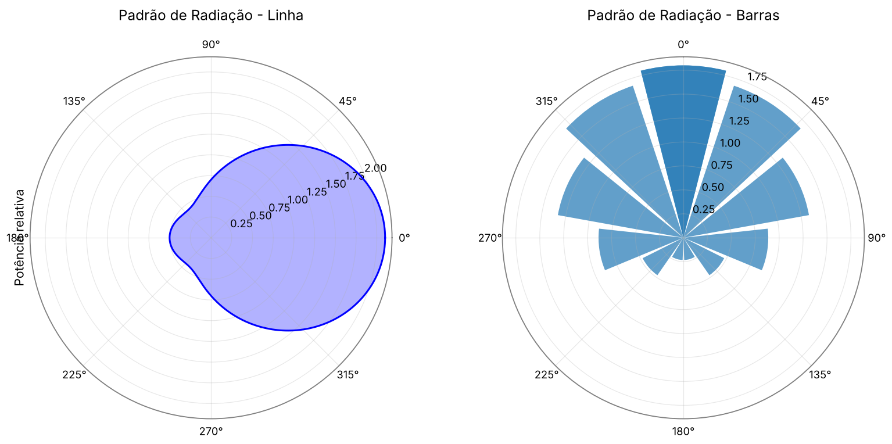
# Simulando dados de pressão atmosférica
x = np.linspace(-10, 10, 50)
y = np.linspace(-10, 10, 50)
X, Y = np.meshgrid(x, y)
# Simulando sistemas de alta e baixa pressão
pressao = (1013 + 20*np.exp(-((X-2)**2 + (Y-3)**2)/8) +
15*np.exp(-((X+3)**2 + (Y-2)**2)/12) -
25*np.exp(-((X+1)**2 + (Y+4)**2)/6))
fig, axes = plt.subplots(1, 3, figsize=(18, 6))
# Mapa de calor básico
im1 = axes[0].imshow(pressao, extent=[-10, 10, -10, 10],
cmap='RdYlBu_r', aspect='auto')
axes[0].set_title('Mapa de Calor')
axes[0].set_xlabel('Longitude')
axes[0].set_ylabel('Latitude')
plt.colorbar(im1, ax=axes[0], label='Pressão (hPa)')
# Contornos preenchidos
cs2 = axes[1].contourf(X, Y, pressao, levels=20, cmap='RdYlBu_r')
axes[1].set_title('Contornos Preenchidos')
axes[1].set_xlabel('Longitude')
axes[1].set_ylabel('Latitude')
plt.colorbar(cs2, ax=axes[1], label='Pressão (hPa)')
# Contornos + linhas
cs3 = axes[2].contourf(X, Y, pressao, levels=20, cmap='RdYlBu_r', alpha=0.8)
contornos = axes[2].contour(X, Y, pressao, levels=10, colors='black',
linewidths=0.8)
axes[2].clabel(contornos, inline=True, fontsize=8)
axes[2].set_title('Contornos + Linhas')
axes[2].set_xlabel('Longitude')
axes[2].set_ylabel('Latitude')
plt.colorbar(cs3, ax=axes[2], label='Pressão (hPa)')
plt.tight_layout()
plt.show()
print("Mapas de calor: visualizando dados 2D!")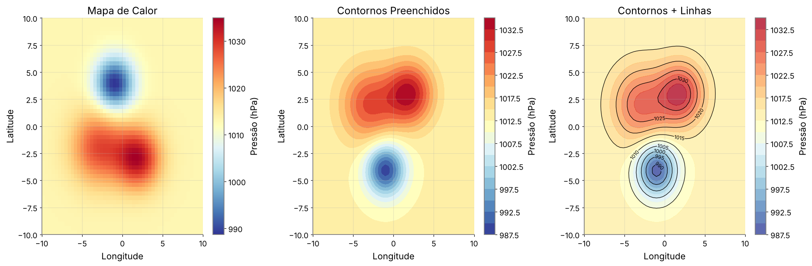
# Simulando dados de diferentes grupos experimentais
np.random.seed(42)
grupo_a = np.random.normal(100, 15, 200)
grupo_b = np.random.normal(110, 10, 200)
grupo_c = np.random.normal(95, 20, 200)
grupo_d = np.concatenate([np.random.normal(80, 8, 100),
np.random.normal(120, 8, 100)]) # Bimodal
dados = [grupo_a, grupo_b, grupo_c, grupo_d]
labels = ['Controle', 'Tratamento A', 'Tratamento B', 'Tratamento C']
fig, (ax1, ax2) = plt.subplots(1, 2, figsize=(15, 6))
# Box plot
bp = ax1.boxplot(dados, labels=labels, patch_artist=True)
cores = ['lightblue', 'lightgreen', 'lightcoral', 'lightyellow']
for patch, cor in zip(bp['boxes'], cores):
patch.set_facecolor(cor)
ax1.set_title('Box Plot - Comparação de Grupos')
ax1.set_ylabel('Valores')
ax1.grid(axis='y', alpha=0.3)
# Violin plot
vp = ax2.violinplot(dados, positions=range(1, len(dados)+1), showmeans=True)
for i, pc in enumerate(vp['bodies']):
pc.set_facecolor(cores[i])
pc.set_alpha(0.7)
ax2.set_title('Violin Plot - Distribuições Completas')
ax2.set_ylabel('Valores')
ax2.set_xticks(range(1, len(labels)+1))
ax2.set_xticklabels(labels)
ax2.grid(axis='y', alpha=0.3)
plt.tight_layout()
plt.show()
print("Box plots e violin plots: comparando distribuições!")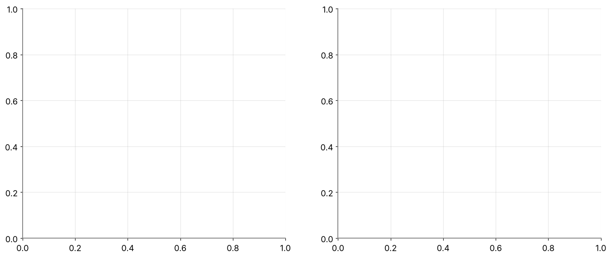
from mpl_toolkits.mplot3d import Axes3D
# Função matemática 3D
x = np.linspace(-5, 5, 50)
y = np.linspace(-5, 5, 50)
X, Y = np.meshgrid(x, y)
Z = np.sin(np.sqrt(X**2 + Y**2)) * np.exp(-np.sqrt(X**2 + Y**2)/5)
fig = plt.figure(figsize=(15, 5))
# Superfície 3D
ax1 = fig.add_subplot(131, projection='3d')
surf = ax1.plot_surface(X, Y, Z, cmap='viridis', alpha=0.8)
ax1.set_title('Superfície 3D')
ax1.set_xlabel('X')
ax1.set_ylabel('Y')
ax1.set_zlabel('Z')
# Contorno 3D
ax2 = fig.add_subplot(132, projection='3d')
ax2.contour3D(X, Y, Z, 50, cmap='plasma')
ax2.set_title('Contornos 3D')
ax2.set_xlabel('X')
ax2.set_ylabel('Y')
ax2.set_zlabel('Z')
# Wireframe
ax3 = fig.add_subplot(133, projection='3d')
ax3.plot_wireframe(X, Y, Z, alpha=0.6)
ax3.set_title('Wireframe 3D')
ax3.set_xlabel('X')
ax3.set_ylabel('Y')
ax3.set_zlabel('Z')
plt.tight_layout()
plt.show()
print("Gráficos 3D: adicionando uma dimensão!")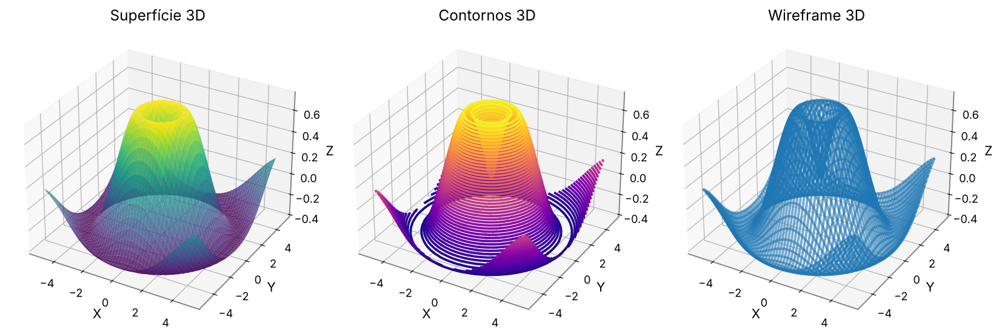
5. Anotações e elementos visuais avançados
Vamos adicionar contexto e destacar informações importantes!
# Simulando dados de um experimento de oscilação
t = np.linspace(0, 20, 1000)
amplitude = 5 * np.exp(-0.1*t) * np.cos(2*np.pi*0.5*t)
plt.figure(figsize=(14, 8))
plt.plot(t, amplitude, 'b-', linewidth=2, label='Oscilação amortecida')
# Encontrando pontos importantes
# Primeiro máximo
idx_max1 = np.argmax(amplitude[:100])
t_max1, amp_max1 = t[idx_max1], amplitude[idx_max1]
# Primeiro zero após o máximo
zeros = np.where(np.diff(np.sign(amplitude)))[0]
t_zero1, amp_zero1 = t[zeros[1]], amplitude[zeros[1]]
# Envelope superior
envelope = 5 * np.exp(-0.1*t)
plt.plot(t, envelope, 'r--', alpha=0.7, label='Envelope')
plt.plot(t, -envelope, 'r--', alpha=0.7)
# Anotações com setas
plt.annotate('Amplitude inicial máxima',
xy=(t_max1, amp_max1), xytext=(3, 3),
arrowprops=dict(arrowstyle='->', connectionstyle='arc3,rad=0.2',
color='red', lw=2),
fontsize=12, color='red',
bbox=dict(boxstyle='round,pad=0.3', facecolor='yellow', alpha=0.7))
plt.annotate('Primeiro zero',
xy=(t_zero1, amp_zero1), xytext=(4, -2),
arrowprops=dict(arrowstyle='->', color='green', lw=2),
fontsize=12, color='green',
bbox=dict(boxstyle='round,pad=0.3', facecolor='lightgreen', alpha=0.7))
# Região destacada
plt.axvspan(8, 12, alpha=0.2, color='orange', label='Região de interesse')
# Linha de referência
plt.axhline(y=0, color='black', linewidth=0.5, alpha=0.5)
plt.title('Oscilação Amortecida - Análise Detalhada', fontsize=16)
plt.xlabel('Tempo (s)', fontsize=14)
plt.ylabel('Amplitude', fontsize=14)
plt.legend(fontsize=12)
plt.grid(True, alpha=0.3)
# Texto explicativo
plt.text(15, 3, 'Decaimento exponencial:(t) = A₀e^(-γt)cos(ωt)',
fontsize=12,
bbox=dict(boxstyle='round,pad=0.5', facecolor='lightblue', alpha=0.8))
plt.tight_layout()
plt.show()
print("Anotações transformam gráficos em histórias!")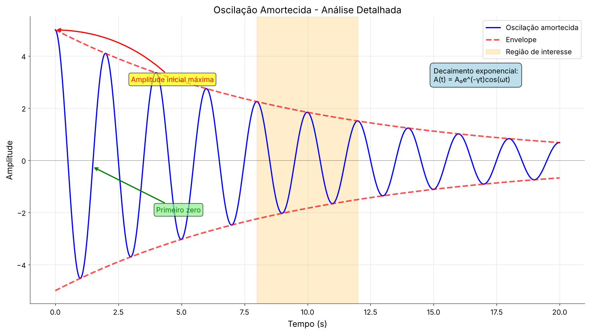
# Dashboard científico completo
fig = plt.figure(figsize=(16, 12))
# Layout complexo com diferentes tamanhos
gs = fig.add_gridspec(3, 4, hspace=0.3, wspace=0.3)
# Gráfico principal (ocupa 2x2)
ax_main = fig.add_subplot(gs[0:2, 0:2])
x_main = np.linspace(0, 10, 200)
y_main = np.sin(x_main) * np.exp(-x_main/5)
ax_main.plot(x_main, y_main, 'b-', linewidth=3)
ax_main.set_title('Gráfico Principal - Sinal Decadente', fontsize=14, fontweight='bold')
ax_main.grid(True, alpha=0.3)
# Histograma (direita superior)
ax_hist = fig.add_subplot(gs[0, 2:])
dados_hist = np.random.normal(0, 1, 1000)
ax_hist.hist(dados_hist, bins=30, color='lightgreen', alpha=0.7, edgecolor='black')
ax_hist.set_title('Distribuição Normal')
# Gráfico de barras (direita meio)
ax_bar = fig.add_subplot(gs[1, 2:])
categorias = ['A', 'B', 'C', 'D', 'E']
valores = [23, 45, 56, 78, 32]
bars = ax_bar.bar(categorias, valores, color='orange', alpha=0.7)
ax_bar.set_title('Dados Categóricos')
# Gráfico de dispersão (esquerda inferior)
ax_scatter = fig.add_subplot(gs[2, 0:2])
x_scatter = np.random.randn(100)
y_scatter = 2*x_scatter + np.random.randn(100)
scatter = ax_scatter.scatter(x_scatter, y_scatter, c=y_scatter,
cmap='viridis', alpha=0.6, s=50)
ax_scatter.set_title('Correlação Linear')
plt.colorbar(scatter, ax=ax_scatter)
# Mapa de calor (direita inferior)
ax_heatmap = fig.add_subplot(gs[2, 2:])
data_2d = np.random.randn(10, 8)
im = ax_heatmap.imshow(data_2d, cmap='coolwarm', aspect='auto')
ax_heatmap.set_title('Mapa de Calor')
plt.colorbar(im, ax=ax_heatmap)
# Título geral
fig.suptitle('Dashboard Científico Avançado', fontsize=18, fontweight='bold', y=0.95)
plt.show()
print("Layout complexo dominado! Você é um mestre da visualização!")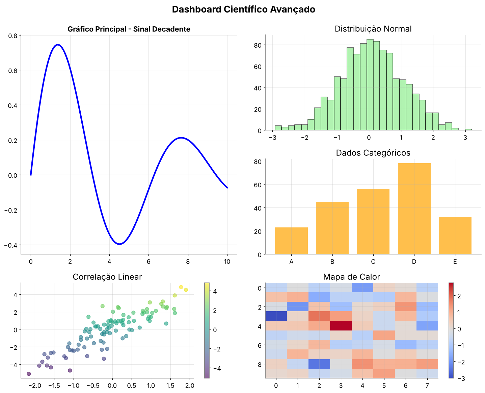
plt.annotate(): setas e textos explicativosplt.axvspan(),plt.axhspan(): regiões destacadasplt.axvline(),plt.axhline(): linhas de referênciabbox: caixas decorativas para textoarrowprops: personalização de setasfig.add_gridspec(): layouts complexos flexíveis
6. Exportação profissional
Como preparar gráficos para diferentes contextos!
# Criando um gráfico para diferentes contextos
x = np.linspace(0, 4*np.pi, 200)
y1 = np.sin(x) * np.exp(-x/8)
y2 = np.cos(x) * np.exp(-x/8)
plt.figure(figsize=(12, 8))
plt.plot(x, y1, 'b-', linewidth=2.5, label='sen(x)×e^(-x/8)')
plt.plot(x, y2, 'r-', linewidth=2.5, label='cos(x)×e^(-x/8)')
plt.title('Funções Trigonométricas Amortecidas', fontsize=18, fontweight='bold')
plt.xlabel('x (radianos)', fontsize=14)
plt.ylabel('Amplitude', fontsize=14)
plt.legend(fontsize=12)
plt.grid(True, alpha=0.3)
# Configurações de exportação para diferentes usos
configuracoes = {
'apresentacao': {
'dpi': 150,
'format': 'png',
'bbox_inches': 'tight',
'facecolor': 'white',
'description': 'Para slides e apresentações'
},
'publicacao': {
'dpi': 300,
'format': 'pdf',
'bbox_inches': 'tight',
'facecolor': 'white',
'description': 'Para artigos científicos'
},
'web': {
'dpi': 96,
'format': 'png',
'bbox_inches': 'tight',
'facecolor': 'white',
'description': 'Para sites e blogs'
},
'impressao': {
'dpi': 300,
'format': 'eps',
'bbox_inches': 'tight',
'facecolor': 'white',
'description': 'Para impressão profissional'
}
}
print("=== CONFIGURAÇÕES DE EXPORTAÇÃO ===")
for uso, config in configuracoes.items():
print(f"{uso.upper()}:")
print(f" Descrição: {config['description']}")
print(f" DPI: {config['dpi']}")
print(f" Formato: {config['format']}")
# Exemplo de código para salvar
nome_arquivo = f'grafico_{uso}.{config["format"]}'
print(f" Comando: plt.savefig('{nome_arquivo}', dpi={config['dpi']}, "
f"format='{config['format']}', bbox_inches='tight')")
# plt.savefig('exemplo_profissional.pdf', dpi=300, bbox_inches='tight')
plt.show()
print("você sabe exportar para qualquer situação!")dpi: qualidade da imagem (96 web, 150 apresentação, 300 impressão)bbox_inches='tight': remove espaços em branco desnecessáriosformat: PNG para tela, PDF/EPS para impressão, SVG para ediçãofacecolor: cor de fundo (padrão ou personalizada)transparent: fundo transparente quando necessário
7. Desafios para casa
Hora de aplicar todos os conceitos avançados!
- Estilos e temas profissionais do Matplotlib
- Configuração personalizada de aparência
- Paletas de cores cientificamente corretas
- Visualizações especiais (polar, 3D, mapas de calor)
- Gráficos de violino e caixa para comparações
- Anotações e elementos visuais avançados
- Layouts complexos com GridSpec
- Exportação profissional para diferentes contextos
- Acessibilidade em visualizações
plt.style.context(): usar estilos temporariamenteplt.rcParams.update(): configuração globalfig.add_gridspec(): layouts complexosplt.annotate(): anotações com setasax.plot_surface(): superfícies 3Dplt.contourf(): contornos preenchidosplt.violinplot(): gráficos de violinoplt.savefig(): exportação com alta qualidadeplt.tight_layout(): ajuste automático de espaçamento- Parâmetros de
savefig():dpi,bbox_inches,facecolor
%%%%%%%%%%%%%%%%%%%%%%%%%%%%%%%%%%%%%%%%%%%%